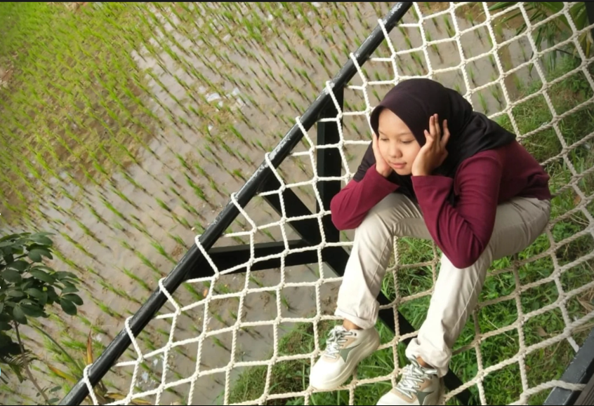

Cerita Kami
Cerita tentang sebelas pertemuan yang menyusun satu garis kisah kita — dari tawa, hujan, hingga malam takbiran.
Baca CeritaIntan Nurhidayah...
Cerita tentang sebelas pertemuan yang menyusun satu garis kisah kita — dari tawa, hujan, hingga malam takbiran.
Baca CeritaIntan… jika kamu membaca ini sekarang, aku harap kamu sedang duduk tenang, dan mau membuka hatimu sebentar saja. Karena kali ini, aku ingin bicara bukan sebagai seseorang yang mengagumimu dari luar, tapi sebagai seseorang yang sungguh-sungguh ingin memahami apa yang kamu rasakan — bahkan yang tidak pernah kamu ucapkan.
Aku tahu kamu sudah banyak melalui hal berat dalam hidup ini. Bahkan beberapa hal, kamu simpan sendiri, tanpa pernah benar-benar ada tempat untuk menumpahkannya. Kamu terlihat kuat, tapi aku tahu… itu bukan berarti kamu tidak pernah lelah. Kadang aku merasa, kamu terlalu sering jadi tempat bagi semua orang, tapi tidak pernah merasa punya tempat sendiri untuk beristirahat.
Ada hari-hari di mana kamu mungkin merasa tidak cukup. Merasa tidak dilihat. Merasa usahamu sia-sia. Aku tidak tahu seberapa sering kamu harus berpura-pura baik-baik saja demi tidak merepotkan orang lain. Tapi di balik semua itu, aku ingin kamu tahu: kamu sudah cukup. Bahkan saat kamu merasa paling hancur sekalipun… kamu tetap cukup.
Dunia ini tidak selalu adil untuk orang sebaik kamu. Tapi kamu tetap berdiri, tetap tersenyum, tetap berusaha memahami orang lain — bahkan yang menyakitimu. Dan aku ingin kamu tahu… itu bukan kelemahan. Itu kekuatan. Tidak semua orang bisa bertahan sebaik kamu. Tidak semua orang bisa tetap lembut, bahkan setelah banyak dikecewakan.
Aku menulis ini karena aku tidak ingin kamu merasa sendiri lagi. Aku ingin kamu punya satu ruang, meskipun kecil, yang sepenuhnya milikmu. Tempat kamu bisa menangis tanpa takut dihakimi. Tempat kamu bisa jujur, tanpa harus tampil kuat. Dan kalau kamu mau, aku akan jadi tempat itu. Aku tidak akan memaksa masuk, tapi aku akan selalu ada... kalau kamu butuh peluk, atau diam.
Intan, kamu tidak harus sempurna untuk dicintai. Kamu tidak harus selalu kuat untuk dianggap hebat. Aku jatuh hati bukan pada sisi sempurnamu, tapi pada sisi rapuhmu yang tetap memilih berjalan. Pada cara kamu menyembunyikan luka, tapi tetap bisa mencintai dunia. Pada caramu tetap hadir untuk orang lain, bahkan saat kamu sendiri sedang kosong.
Aku tahu masa lalumu tidak mudah. Mungkin masih ada yang membekas. Tapi aku percaya, kamu bukan dirimu karena luka itu — kamu dirimu karena kamu tetap memilih bertumbuh, meski banyak yang menyuruhmu menyerah. Dan buatku… itu adalah keindahan paling nyata dari seorang manusia.
Jika suatu hari kamu merasa gagal, ingatlah bahwa kamu adalah jawaban dari doa orang-orang yang mencintaimu. Dan jika suatu malam kamu ingin menyerah, ingatlah bahwa dunia masih butuh kebaikanmu. Aku butuh kamu. Bukan untuk jadi penyelamat, tapi cukup untuk jadi dirimu sendiri — yang hangat, yang jujur, dan apa adanya.
Terima kasih karena sudah bertahan sejauh ini. Terima kasih karena tidak menyerah. Terima kasih karena tetap memilih hidup, meski kadang semuanya terasa berat. Aku tidak tahu apakah kamu akan selalu mengingat tulisan ini, tapi aku harap… saat kamu sedang sendirian, kamu akan merasa sedikit lebih tenang. Karena seseorang di luar sana… benar-benar peduli padamu.
Dan jika semua ini terasa terlalu banyak untuk dipahami sekarang, tidak apa-apa. Baca pelan-pelan. Rasakan satu-satu. Tapi ingat satu hal: kamu berhak bahagia. Bukan karena kamu sempurna… tapi karena kamu manusia. Dan manusia seperti kamu… layak dicintai, seutuhnya, selamanya.